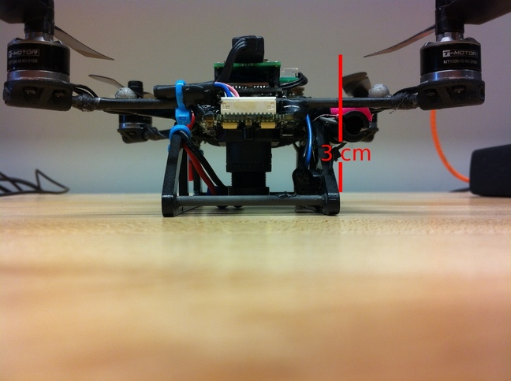

Overview
This project is composed of 2 parts. In part one we have to determine the position and orientation of a quadrotor flying over a Mat of April Tags. For the second part, I estimate the linear and angular velocity of the drone using Optical Flow.
The data for this project was collected using a Nano+ quadrotor that was either held by hand or flown through a prescribed trajectory over a mat of AprilTags, each of which has a unique ID.Thes images captured by the quadrotor are in a time sequence. We know the coordinates of each point on the April Tag mat. Using this information we can find the position and orientation of the quadrotor in the world frame.
The intrinsic camera calibration matrix and the transformation between the camera and the robot center are known. These Two photos are included to visualize the camera-robot body transform

The data contains a struct array of image data called data, which holds all of the data necessary to do pose estimation. This includes the time stamps, April Tag IDs observed for each time stamp and the location of the April Tag corners and centers in image coordinates.
This is a rectified image of the April Tag Mat.
Part I: Pose Estimation
Methodology
The goal of this section is to use this data to determine the pose of the quadrotor. I have to use the points of the corners of each AprilTag along with their corresponding positions in the image to estimate the pose of the camera, and then the drone body. I do this by computing the homography matrix H for the points whose position we know in both the image plane as well as the real-world. The homography matrix converts points in the 3D world frame to the 2D image plane. Here, all the real-world points have Z coordinate as 0. Hence:
We get the Projective transformation equation as
We need 4 correspondences to constrain all 8 degrees of freedom. The elements are stored in row order In general, a Projective transformation can map any 4 points to any 4 points, with no triplets of collinear points. However, using more than 4 correspondences makes the results more robust. Stacking together all correspondences for a given time stamp we get the \(A\) matrix. Hence,
\[Ah = 0\]
We perform least squares optimization by taking the SVD decomposition of matrix A.
We get the homography matrix from 9th coloumn of the V matrix.
From this we extract our Rotation matrix \((R)\) and our Translation Vector \((T)\).
The diagonal guarantees it is a rotation matrix with determinant 1. To find our estimate of the translation we just make sure it is in the right scale using the following.
\[T = \hat{T}/||\hat{R_1}||\]
Pose Tracking Results
The results show that the calculated pose (blue) is closely tracking the ground truth from the Vicon (red).
Part II: Velocity Estimation
Methodology
We first extract corners in each image. I used MATLAB’s built in corner detectors detectFASTfeatures to accomplish this. The extracted corners includes corners from the random scribble.
After extracting corners, the next step is to compute the motion(Optical Flow) between these corners in two consecutive images. This is achieved using the Kanade-Lucas-Tomasi (KLT) feature tracker in MATLAB. Optical flow refers to the pattern of apparent motion of objects, surfaces, and edges in a visual scene caused by the relative motion between an observer and the scene.
We need to solve the Motion Field Equation for the case of fixed depth. The Motion Field Equation relates the image plane velocities of the points (denoted by \(( \dot{p} )\)) to the motion of the camera or object. This equation is based on the assumption of a fixed depth (denoted by \(( Z )\)), where$ ( A(p) )$ and \(( B(p) )\) are functions of the point coordinates in the image, and \(( V )\) and \(( \Omega )\) represent the linear and angular velocities, respectively. \[ \dot{p} = \frac{1}{Z} A(p)V + B(p)\Omega\] \[\dot{p} = \frac{1}{Z} A(p)V + B(p)\Omega = \left( \frac{1}{Z} A(p) \quad B(p) \right) \begin{pmatrix} V \\ \Omega \end{pmatrix}\]
Least Squares Minimization: The estimated velocities are obtained by solving an optimization problem, where the sum of the squared differences between the observed image plane velocities (( _i )) and those predicted by the Motion Field Equation is minimized. This is a classic least squares problem
\[V^*, \Omega^* = \arg\min_{V,\Omega} \sum_{i=1}^n \left\| \left( \frac{1}{Z_i} A(p_i) \quad B(p_i) \right) \begin{pmatrix} V \\ \Omega \end{pmatrix} - \dot{p}_i \right\|^2 \]
Velocity Estimation Equation: Finally, the solution to the optimization problem yields the estimated linear and angular velocities \(( V^*)\) and \(( \Omega^* )\), encapsulated in a matrix form. The matrix $ ( H^+ )$ is the pseudo-inverse of a matrix \(( H )\), which relates the observed velocities \(( \dot{p} )\) to the motion parameters \(( V )\) and \(( \Omega )\). The pseudo-inverse is used when the system of equations is either underdetermined or overdetermined, allowing for a least squares solution to the problem.
\[\begin{pmatrix} V^* \\ \Omega^* \end{pmatrix} = H^+ \dot{p}\]
RANSAC (RANdom SAmple Consensus)
RANSAC is an algorithm used for estimating parameters of a mathematical model from a set of data that may contain outliers. The algorithm works by iteratively selecting random subsets of data points and fitting a model to these subsets. The model parameters are then evaluated on the remaining data points, and if the model fits well to a sufficient number of points, it is considered a good fit and the algorithm terminates. The number of attempts(k) required to achieve a probability of success Psuccess is given by the equation \[k = \frac{\log(1 - P_{\text{success}})}{\log(1 - e^{-M})} \]
To implement RANSAC I use the following pseudocode
Veloctiy Estimation Results
The graph has a noticeable pattern of increased activity, particularly spikes, which could indicate rapid changes in altitude or disturbances affecting the drone’s movement. The predictions seems to be noisy need to experiment by tuning tracker parameters and using different tracker algorithms. Overall, the predictions track the true velocities closely but there is room for improvement.